BRIER2: Bregman-divergence-based Regularized Integrative Estimator in Regression
BRIER2.RmdIntroduction
Background
Genetic risk prediction plays an increasingly important role in precision medicine by quantifying how inherited genetic variation contributes to complex traits. Approaches such as polygenic risk scores (PRS) for disease risk stratification, drug response prediction for individualized treatment, and genetically regulated expression (GReX) models for linking genetic variation to transcriptomic architecture illustrate the expanding influence of statistical genetics on biomedical research and its emerging role in clinical translation.
Despite these advances, prediction performance remains limited in
clinically underrepresented populations with scarce data. To address
these gaps, we previously introduced BRIER [LINK TO
BRIER1], which integrates a well-powered external model with either
individual- or summary-level data from a target cohort using a Bregman
divergence framework. Here, we introduce BRIER2, a
comprehensive update of the previous version.
Key Modules
BRIER2 implements a flexible Bregman-divergence based
integration framework to improve prediction of complex traits in a
target local cohort by leveraging information from external sources
under diverse data-availability settings. The framework is implemented
through three principled module functions, BRIER.FULL,
BRIER.I, and BRIER.S. Below, we briefly
describe the setting for which each function is designed and provide
worked examples illustrating their use.
BRIER.FULL is designed for settings in which
individual-level data are available in both the target
cohort and the external cohort. In particular, both the outcome \(y\) and predictor matrix \(X\) are observed for samples from each data
source.
BRIER.I is designed for settings in which
individual-level data are available in the target
cohort, but the external sources do not share raw data and instead
provide only pre-trained models (e.g., published PRS
weights, penalized regression coefficients). Such settings commonly
arise in applications such as predicting binary disease status using
gene expression profiles [cite1], or constructing genetic prognostic
models for time-to-event outcomes [cite2].
BRIER.S is designed for settings where only summary
statistics (e.g. GWAS summary statistics and LD matrix) are available in
both target and external cohorts. This module is particularly useful for
constructing predictors such as polygenic risk scores (PRS) [cite3] from
GWAS summary statistics, or genetically regulated expression (GReX)
models from eQTL summary statistics [cite4].
We provide a flowchart outlining the BRIER2 pipeline and
its major components.
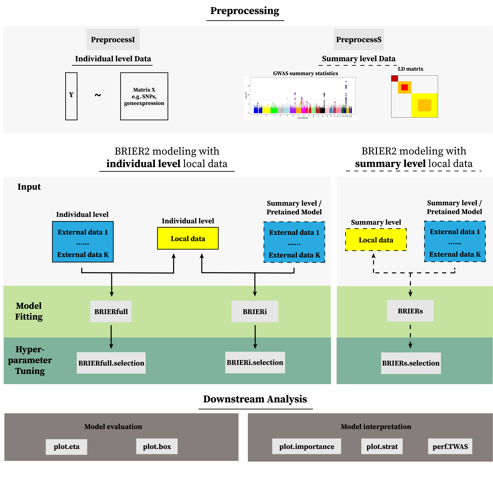
Features
BRIER2 provides a comprehensive and flexible framework
for integrative genetic risk modeling, with the following key
features:
-
Flexibility to integrate external information according to
different data access and privacy constraints
BRIER2flexibly integrates external information with target data across a wide range of data-availability scenarios, including individual-level data, summary statistics, and pre-trained external models. -
Support various distribution families from complex
traits
BRIER2supports a wide range of distribution families to accommodate continuous, binomial, count, and time-to-event outcomes. -
A suite of hyperparameter tuning tools.
Provide information-criterion based hyperparameter tuning for all three main modeling functions (BRIERfull.selection,BRIERi.selection, andBRIERs.selection) without requiring an independent validation set. -
Integration of multiple external models.
Ensemble-based weighting of multiple external models (BRIERi.multi,BRIERs.multi) enables scalable integration of multiple information sources without inflating the hyperparameter space, substantially reducing computational burden.
In addition, BRIER2 includes several features designed
to improve practical usability in genetic applications:
-
Improved computational efficiency.
Core components are fully optimized using Rcpp and support multi-core parallel computing, resulting in substantial runtime improvements for large-scale genetic analyses. -
Support for imputed genotype data.
Thecalculate.LDmodule directly processes imputed genotype data in BGEN files to generate sparse LD matrices. -
Precomputed ancestry-specific LD panels.
Built-in LD reference panels for major global ancestries (EUR, AFR, EAS, SAS, AMR) are provided in both hg19 and hg38 genomic builds. -
Model interpretability.
A collection of downstream analysis and visualization tools is provided to facilitate evaluation and biological interpretation of fitted models.
Installation
BRIER2 requires the following R packages:
Rcpp,RcppArmadillo, Matrix,
BEDMatrix, pROC, data.table.
These can be installed with
install.packages(
c("Rcpp", "RcppArmadillo", "Matrix", "BEDMatrix", "data.table", "pROC"),
dependencies = TRUE
)You can install the package from CRAN:
install.packages("BRIER2")Or install the development version from GitHub:
remotes::install_github("UM-KevinHe/BRIER2", ref = "main")
BRIERfull: modeling with individual level target and
external data
Data format and preprocessing
BRIER.FULL requires:
- pooled individual-level predictor design matrix and phenotype data from the target cohort and external cohorts.
- (Optional) a indicator vector identifying cohort sources when multiple external datasets are included. Default is a vector of “0” to indicate data only comes from target cohort.
- Note: For
BRIERfullmodeling, users must restrict the analysis to predictors that overlap between the target and external cohorts. When the predictor sets are not perfectly aligned across data sources, users may refer to our previous work [LINK] for recommended modeling strategies and practical guidance. -
BRIER.FULLcurrently supports modeling of continous, binary, count, and time-to-event outcomes.
We begin by loading the package:
Below we import the phenotype and predictor matrix from target and external cohorts.
## Read data from target cohorts
X_target = read.table("path/to/file")
y_target = read.table("path/to/file") %>% as.vector()
names(y_target) == rownames(X_target)
length(y_target) == nrow(X_target) # sample name and number of observation should be matched
## Read data from external cohorts 1
X_ext1 = read.table("path/to/file")
y_ext1 = read.table("path/to/file") %>% as.vector()
names(y_ext1) == rownames(X_ext1)
length(y_ext1) == nrow(X_ext1) # sample name and number of observation should be matched
## Read data from external cohorts 2
X_ext2 = read.table("path/to/file")
y_ext2 = read.table("path/to/file") %>% as.vector()
names(y_ext2) == rownames(X_ext2)
length(y_ext2) == nrow(X_ext2) # sample name and number of observation should be matchedUsers should subset the predictors to those that are shared between the target and external cohorts, and then pool the target and external data for model fitting. A source indicator vector ind should be provided to denote the origin of each observation, where 0 indicates the target data and positive integers (e.g., 1, 2, …) indicate different external data sources.
Fitting BRIERfull
BRIERfull jointly models individual-level data from the
target cohort and external cohort(s). Below we describe the main input
arguments of BRIERfull.
-
X: Pooled individual-level predictor matrix from the target cohort and external cohort(s). -
y: Pooled individual-level outcome vector from the target cohort and external cohort(s). -
ind: An indicator vector specifying cohort membership for each observation, used to distinguish the target cohort from one or more external cohorts. The default assumes all observations come from the target cohort. -
family: Outcome distribution family. Supported options include"gaussian","binomial","poisson", and"negbin". Additional details are provided in the Appendix. The default is"gaussian". -
penalty: Penalty function used for regularized estimation. Supported options include"LASSO","MCP", and"SCAD". The default is"LASSO". -
eta_vec: A vector of integration-weight parametersetacontrolling the degree of information borrowing from the external cohort(s).
fit <- BRIERfull(
X = X,
y = y,
ind = ind,
family = "gaussian",
penalty = "LASSO",
eta.vec = exp(seq(0, log(10), length = 20))
)When multiple external data sources are available and different
integration weights are desired for each source, users should supply a
list to eta_vec, with each element corresponding to a
vector of weights for one external cohort. The order of elements in
eta_vec must match the ordering of the external data
sources as indicated by the source indicator vector ind .
sub = intersect(colnames(X_target), colnames(X_ext1), colnames(X_ext2))
y = c(y_target, y_ext1, y_ext2)
X = rbind(X_target[, sub], X_ext1[, sub], X_ext2[, sub])
ind = c(rep(0, length(y_target)), rep(1, length(y_ext1)), rep(1, length(y_ext2)))
fit = BRIERfull(
X = pred,
y = pheno,
ind = ind,
family = "gaussian",
penalty = "LASSO",
eta.vec = list(
exp(seq(0, log(10), length = 20)),
seq(0, 10, length = 20)
)
)Hyperparameters
The framework involves two classes of hyperparameters: the regularization parameter \(\lambda\) and the integration weights \(\{\eta_m\}_{m=1}^M\). For the regularization parameter \(\lambda\), we adopt the classic regularization path strategy implemented in package , and provide a data-driven sequence of \(\lambda\) for each \(\eta\) value. By default, the maximum value of \(\lambda\) is defined as the smallest value at which all predictors are excluded from the model, while the minimum value is set to \(0.001 \times \lambda_{\max}\). A sequence of 100 equally spaced values on the log scale is used to construct the \(\lambda\) grid, unless otherwise specified by the user.
Hyperparameter tuning of \(\eta\) using grid search
We first introduce search strategy of integration weights \(\eta\) using a user-specified fixed
sequence. By default, the \(\eta\) grid
is defined as exp{seq(log(0.1), log(10), length = 20)}. For each
candidate pair of hyperparameters \((\eta,
\lambda)\), BRIERfull evaluates model performance
and selects the optimal combination when an independent
validation set is available. Below displays an example of using
MSPE as evaluation metric for continuous outcome. Additional evaluation
metrics for different outcomes are provided in the Appendix.
## Read validation data
y_val = read.table("path/to/file")
X_val = read.table("path/to/file") %>% as.vector()
## Hyperparameter tuning using independent validation set
out = BRIERfull.selection(
fit = fit,
X.val = X_val,
y.val = y_val,
criteria = "gaussian.mspe"
)
## Best eta and lambda based on Cp are reportedFunction plot.eta can be used to guide and visualize the
selection of the best performing integration weight \(\eta\), according to different evaluation
metrics used in the validation set. The below figure displays the
predictive performance (here, MSPE for a Gaussian outcome) evaluated on
the validation set as a function of \(\eta\). The optimal integration weight is
identified as the value of \(\eta\)
that minimizes (or maximizes, depending on the metric) the evaluation
criterion.
plot.eta(out)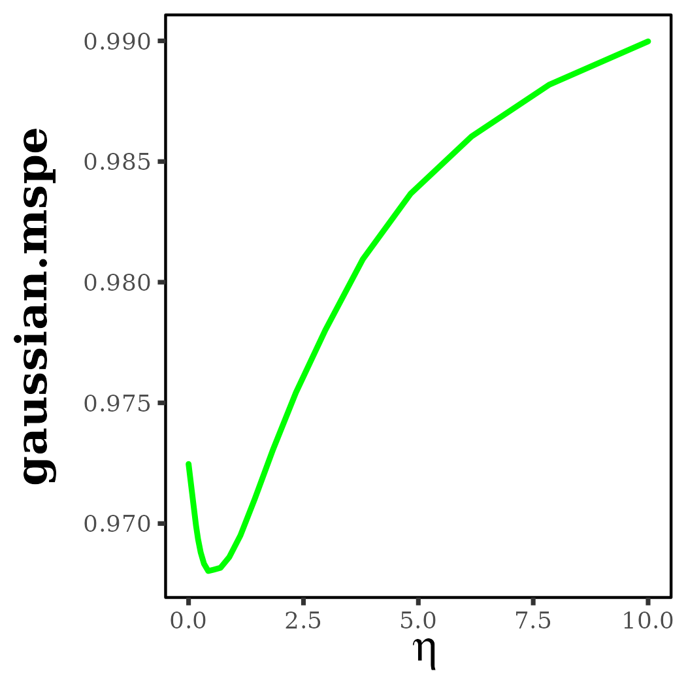
Hyperparameter tuning of \(\eta\) using Bayesian optimization
We implement Bayesian optimization based search strategy of the
integration weight \(\eta\) using the
rBayesianOptimization package. This approach adaptively and
iteratively proposes candidate values of \(\eta\) by learning a surrogate model of the
objective function, leading to a substantially higher sampling density
in the neighborhood of the optimal integration weight compared with a
fixed grid search.
Bayesian optimization in BRIERfull is accessed through
the function BRIERfull.bopt. Users must specify the search
range of the integration weight \(\eta\) through the bounds_list
argument, as well as the total number of Bayesian optimization
iterations through n_iter. Additional required arguments
are described below.
First, the score (objective) function is defined through the
criteria argument. When an independent validation set is
available, users should specify an appropriate predictive-performance
metric, chosen according to the outcome distribution Appendix as the optimization objective. In this setting,
the validation data must be supplied through the arguments
X.val and y.val.
Second, the acquisition function is specified via the acq argument.
The available options, “ucb”, “poi”, and “EI”, correspond to the Upper
Confidence Bound (UCB), Probability of Improvement (POI), and Expected
Improvement (EI) acquisition functions, respectively, as implemented in
the rBayesianOptimization package. The default choice is
“ucb”.
Finally, the initial evaluation points for Bayesian optimization are
controlled by the arguments init_grid_dt and
init_points. If init_grid_dt is left empty,
the algorithm initializes by randomly sampling init_points
values of \(\eta\) from the range
specified in bounds_list. By default, a single initial
point, data.frame(eta = 1), is used for
init_grid_dt. This choice reflects the fact that \(\eta = 1\) corresponds to equal weighting
between the target and external information and was observed in
simulation studies to induce higher effective sampling density in the
neighborhood of the optimal integration weight \(\eta\).
y_val = read.table("path/to/file")
X_val = read.table("path/to/file") %>% as.vector()
out = BRIERfull.bopt(
X = pred,
y = pheno,
ind = ind,
family = "gaussian",
penalty = "LASSO",
X.val = X_val,
y.val = y_val,
criteria = "gaussian.mspe"
)
## Best eta and lambda based on Cp are reportedWe also provide the function plot.eta.density to
visualize the empirical density of the \(\eta\) values explored during Bayesian
optimization. This plot illustrates how the adaptive sampling strategy
concentrates evaluations in regions with high objective values. The
vertical red dotted line indicates the selected (optimal) integration
weight \(\eta\).
plot.eta(out)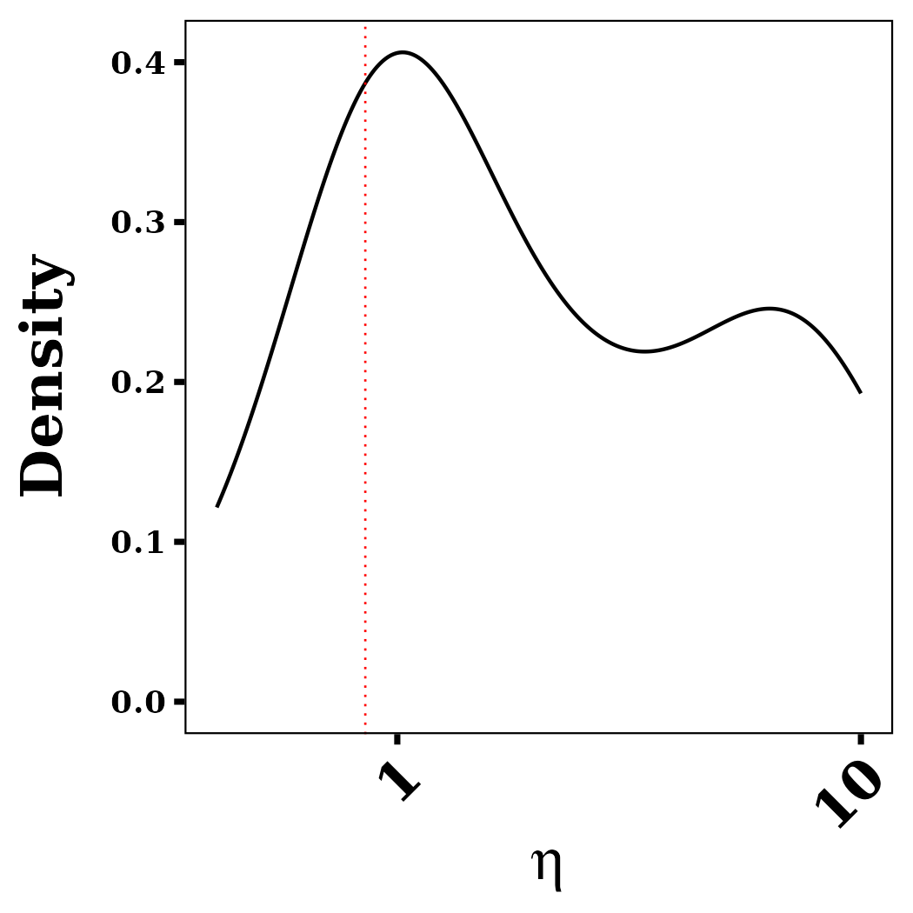
BRIERi: modeling with individual-level target data and
trained external models
Data format and preprocessing
BRIERi requires:
- Individual-level predictor design matrix and phenotype data from the target cohort.
- Pre-trained external models. External model must be provided from joint model coefficients (e.g., PRS, penalized regression). If only GWAS summary statistics or marginal predictor–trait inner products are available, users should instead refer to BRIER.S to train a joint model directly from summary-level data. Multiple external models can be provided as a column-stacked matrix.
-
BRIER.Icurrently supports modeling of continous, binary, count, and time-to-event outcomes.
We begin by loading the package:
Below we import the phenotype and predictor matrix from target data and external model. Users should subset the predictors to those that are shared between the target and external models. We note that it is strongly recommended to train the external model using this shared set of predictors to minimize heterogeneity between the target and external data. When the external model is obtained from a published study (e.g., published PRS weights), users may reconstruct the external model by assigning coefficient values of zero to predictors that are present in the target data but absent from the external model, or vice versa.
## Read data from target cohort
X_target = read.table("path/to/file")
y_target = read.table("path/to/file") %>% as.vector()
names(y_target) == rownames(X_target)
length(y_target) == nrow(X_target) # sample name and number of observation should be matched
## Read data from external model
beta = read.table("path/to/file") %>% as.vector()
## reconstruct beta so it matches colnames(X_target) exactly, filling unoverlapped (missing) coefficients with 0
beta_ext = setNames(numeric(ncol(X_target)), colnames(X_target))
beta_ext[intersect(names(beta), colnames(X_target))] = Ebeta[intersect(names(beta), colnames(X_target))]
head(pheno)
head(pred)
head(ind)Data preprocessing with polygenic risk modeling
We provide the helper function PreprocessI for polygenic
risk modeling, where genotypes (SNPs) are used as predictors. The
function PreprocessI harmonizes SNP definitions between the
target data and external models by matching genomic positions and
aligning effect alleles (with strand handling as needed).
dat = PreprocessI(
X.target, y.target, covar.target, standardize.target = T,
ss.ext, type.ext, N.ext = NULL, LD.ext = NULL
)Input format of target data
To process users should provide individual-level data from the target cohort, including genotype data, phenotype data, and predictor SNPs identifier.
Specifically, the required target inputs are:
-
X.target: An individual-level genotype matrix of dimension \(n\times p\), where n is the number of individuals and p is the number of SNPs. Genotypes should be coded numerically (e.g., 0/1/2 for allele counts). -
y.target: A vector of length n containing the phenotype of interest for the target cohort. The outcome type (continuous, binary, or count) should be compatible with the specified model family. -
covar.target: A data frame that includes SNP identifier information and, optionally, individual-level covariates. The SNP identifier component must contain columns CHR, BP, A1, and A2, where CHR denotes the chromosome, BP the genomic position, A1 the non-effect allele, and A2 the effect allele. These identifiers are used to construct SNP labels of the form “CHR:BP:A1:A2” and must correspond to the columns of X.target if presents. In addition,covar.targetmay include covariates (e.g., age, sex, ancestry principal components) with n rows, aligned with X.target and y.target. If no covariates are to be included,covar.targetshould contain only the SNP identifier columns. -
standardize.target: A logical indicator specifying whether the phenotype should be standardized after adjusting for covariates specified incovar.target. We note that in most PRS applications, external models are trained on standardized residual phenotypes; therefore, settingstandardize.target = TRUEis generally recommended to ensure compatibility between the target data and the external model. If the external model is derived from an unstandardized phenotype and includes an intercept term, users may setstandardize.target = FALSE. In this case, the model fitted byBRIERiwill also include an intercept term.
X = BEDMatrix("path.bed")
X = as.matrix(X)
y = read.table(XXX)
covar = read.table(XXX)Input format of external summary statistics
Users should provide the target summary statistics through the
argument ss.ext. Three types of inputs are supported, as
specified by the argument type.ext:
- Option1: GWAS summary statistics (
type.ext= “GWAS”) - Option2: SNP-wise (marginal) genotype-trait correlation
(
type.ext= “corr”); defined as \(\boldsymbol X\boldsymbol y/n\), where \(\boldsymbol X\), \(\boldsymbol y\) can be either standardized or unstandardized).
- Option3: Joint regression coefficient (
type.ext= “coef”).
We note that when summary statistics are provided under Option 1 or
Option 2, the function will automatically estimate the joint regression
coefficients using BRIERs with \(\eta = 0\), and select tuning parameter
\(\lambda\) by \(C_p\) criterion. In such case, the fitted
external model is based on standardized phenotype and genotype and does
not contain an intercept. In such cases, the argument N.ext
must be provided to indicate the total sample size used to compute the
external summary statistics, and the argument LD.ext is
also required for modeling through BRIERs.
Option 1: GWAS summary statistics from external data
N_ext = 100
type_ext = "GWAS"
ss_ext = read.table("Target.GWAS.txt", header = TRUE)
head(ss_ext)The target GWAS summary statistics provided through
ss.ext must contain the following information:
-
CHR: chromosome -
BP: genomic position -
A1: non-effect allele -
A2: effect allele -
S(effect direction) orBETA(effect size) -
N: per-SNP sample size used in the GWAS -
P: marginal GWAS p-value
If the column names in the input file differ from the defaults listed
above, users may explicitly specify the corresponding column names using
the arguments ext.CHR.name, ext.BP.name,
ext.A1.name, ext.A2.name,
ext.S.name, ext.BETA.name,
ext.N.name, ext.P.name in
PreprocessS.
Option 2: SNP-wise genotype–trait correlation from external data
N_ext = 100
type_ext = "corr"
ss_ext = read.table("Target.Corr.txt", header = TRUE)
head(ss_ext)The target GWAS summary statistics provided through
ss.ext must contain the following information:
-
CHR: chromosome -
BP: genomic position -
A1: non-effect allele -
A2: effect allele -
corr: SNP-wise marginal correlation
If the column names in the input file differ from the defaults listed
above, users may explicitly specify the corresponding column names using
the arguments ext.CHR.name, ext.BP.name,
ext.A1.name, ext.A2.name,
ext.corr.name in PreprocessS.
Option 3: Joint regression coefficient estimate from external data
N_ext = NULL
type_ext = "CORR"
ss_ext = read.table("Target.Corr.txt", header = TRUE)
head(ss_ext)The external GWAS summary statistics provided through
ss.ext must contain the following information:
-
CHR: chromosome -
BP: genomic position -
A1: non-effect allele -
A2: effect allele -
coef: joint coefficient estimate
If the column names in the input file differ from the defaults listed
above, users may explicitly specify the corresponding column names using
the arguments ext.CHR.name, ext.BP.name,
ext.A1.name, ext.A2.name,
ext.coef.name in PreprocessI.
Run PreprocessI
With the summary statistics from the target and external datasets
prepared as described above, we now run PreprocessI to
perform the required data preprocessing. The function output a list,
containing X for processed target design matrix,
y for processed target phenotype, beta.ext for
processed external trained model.
dat = PreprocessI(
X.target = X_target, y.target = y_target, covar.target = covar_target, standardize.target = T,
ss.ext = ss_ext, type.ext = type_ext, N.ext = N_ext, LD.ext = LD_ext
)Fitting BRIERi
Once preprocessing is complete, a BRIER.I model can be
fitted directly. Below we describe the main input arguments of
BRIERi.
-
X: Individual-level predictor matrix from the target cohort. -
y: Individual-level outcome vector from the target cohort. -
beta.external: A vector of pretrained model coefficients from the external cohort(s), including the intercept term. -
family: Outcome distribution family. Supported options include"gaussian","binomial","poisson", and"negbin". Additional details are provided in the Appendix. The default is"gaussian". -
penalty: Penalty function used for regularized estimation. Supported options include"LASSO","MCP", and"SCAD". The default is"LASSO". -
eta_vec: A vector of integration-weight parametersetacontrolling the degree of information borrowing from the external cohort(s).
Hyperparameters
The framework involves two classes of hyperparameters: the regularization parameter \(\lambda\) and the integration weights \(\{\eta_m\}_{m=1}^M\). For the regularization parameter \(\lambda\), we adopt the classic regularization path strategy implemented in package , and provide a data-driven sequence of \(\lambda\) for each \(\eta\) value. By default, the maximum value of \(\lambda\) is defined as the smallest value at which all predictors are excluded from the model, while the minimum value is set to \(0.001 \times \lambda_{\max}\). A sequence of 100 equally spaced values on the log scale is used to construct the \(\lambda\) grid, unless otherwise specified by the user.
Hyperparameter tuning of \(\eta\) using grid search
We first introduce search strategy of integration weights \(\eta\) using a user-specified fixed
sequence. By default, the \(\eta\) grid
is defined as exp{seq(log(0.1), log(10), length = 20)}.
BRIERi provides three criterion to evaluate each candidate
pair of hyperparameters \((\eta,
\lambda)\): cross-validation, evaluation on an independent
validation set, and information-based criteria. The function
BRIERi.cv performs cross-validation on the training data,
using the predicted deviance as evaluation criteria, with the specific
deviance definition provided in Appendix
fit = BRIERi.cv(
X = dat$X,
y = dat$y,
beta.external = dat$beta.external,
eta = exp(seq(0, log(10), length = 20))
family = "gaussian",
penalty = "LASSO"
)BRIERi.selection can also select the optimal
hyper-parameters if an independent validation set is provided. Below
displays an example of using MSPE as evaluation metric for continuous
outcome. Additional evaluation metrics for different outcomes are
provided in the Appendix.
X_val = read.table("path/to/file")
y_val = read.table("path/to/file") %>% as.vector()
out = BRIERi.selection(
fit = fit,
X.val = X_val,
y.val = y_val,
criteria = "gaussian.mspe"
)
## Best eta and lambda based on Cp are reportedFor continuous, binary, and count outcomes, users can also utilize
information-based criteria to tune the optimal hyperparameters \((\eta, \lambda)\). We implemented Bayesian
information criteria (BIC; specified by argument
criteria = "BIC"), Mallow’s \(C_p\) (\(C_p\); specified by argument
criteria == "Cp"), and generalized cross validation (GCV;
specified by argumet criteria = "gcv"). The required
arguments of different tuning methods are summarized in the table below.
Detailed formula of information criteria is summarized in Appendix.
| Tuning method | Criteria argument | Required inputs | Typical usage |
|---|---|---|---|
| Bayesian Information Criterion (BIC) | criteria = "BIC" |
X, y,
BRIERi.obj
|
BRIERi.selection(X, y, BRIERi.obj, criteria = "BIC") |
| Generalized Cross-Validation (GCV) | criteria = "gcv" |
X, y,
BRIERi.obj
|
BRIERi.selection(X, y, BRIERi.obj, criteria = "gcv") |
| Mallows’ \(C_p\) | criteria = "Cp" |
X, y,
BRIERi.obj
|
BRIERi.selection(X, y, BRIERi.obj, criteria = "Cp") |
Based on extensive simulation studies and real-data applications, we recommend Mallows’ \(C_p\), as it consistently achieves better predictive performance.
X_val = read.table("path/to/file")
y_val = read.table("path/to/file") %>% as.vector()
out = BRIERi.selection(
fit = fit,
criteria = "Cp"
)
## Best eta and lambda based on Cp are reportedThe function plot.eta can be used to guide and visualize
the selection of the optimal integration weight \(\eta\) based on predictive performance
under different evaluation metrics from cross-validation and an
independent validation set, or based on information-criterion values.
The left panel displays the predictive performance (here, MSPE for a
Gaussian outcome) evaluated on the validation set as a function of \(\eta\), while the right panel shows the
corresponding information-criterion curve (e.g., Cp). The optimal
integration weight is identified as the value of \(\eta\) that minimizes (or maximizes,
depending on the metric) the evaluation criterion.
plot.eta(out)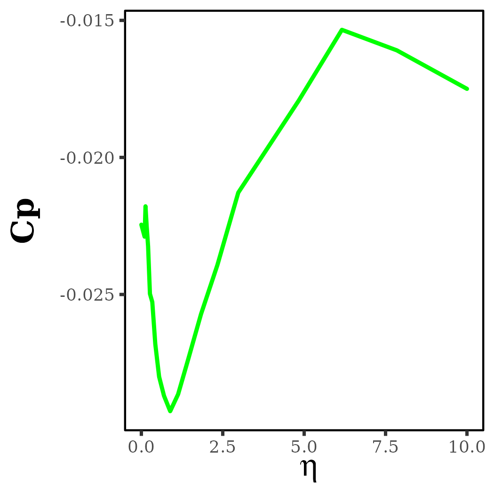
Hyperparameter tuning of \(\eta\) using Bayesian optimization
We implement Bayesian optimization–based search strategy of the
integration weight \(\eta\) using the
rBayesianOptimization package. This approach adaptively and
iteratively proposes candidate values of \(\eta\) by learning a surrogate model of the
objective function, leading to a substantially higher sampling density
in the neighborhood of the optimal integration weight compared with a
fixed grid search.
Bayesian optimization in BRIERi is accessed through the
function BRIERi.bopt. Users must specify the search range
of the integration weight \(\eta\)
through the bounds_list argument, as well as the total
number of Bayesian optimization iterations through n_iter.
Additional required arguments are described below.
First, the score (objective) function is defined through the
criteria argument. When an independent validation set is
available, users should specify an appropriate predictive-performance
evaluation metric, chosen according to the outcome distribution evaluation metrics as the optimization objective.
In this setting, the validation data must be supplied through the
arguments X.val and y.val. Alternatively,
Bayesian optimization can be performed using information-based criteria
as the objective function, without requiring a validation set. In this
case, the criteria argument should be set to one of the supported
information criteria listed in Table @ref(tab:BRIERi.selection), and the
corresponding quantities are computed internally from the target
data.
Second, the acquisition function is specified via the acq argument.
The available options, “ucb”, “poi”, and “EI”, correspond to the Upper
Confidence Bound (UCB), Probability of Improvement (POI), and Expected
Improvement (EI) acquisition functions, respectively, as implemented in
the rBayesianOptimization package. The default choice is
“ucb”.
Finally, the initial evaluation points for Bayesian optimization are
controlled by the arguments init_grid_dt and
init_points. If init_grid_dt is left empty,
the algorithm initializes by randomly sampling init_points
values of \(\eta\) from the range
specified in bounds_list. By default, a single initial
point, data.frame(eta = 1), is used for
init_grid_dt. This choice reflects the fact that \(\eta = 1\) corresponds to equal weighting
between the target and external information and was observed in
simulation studies to induce higher effective sampling density in the
neighborhood of the optimal integration weight \(\eta\).
Below are examples of using the prediction performance on validation set as the score function:
y_val = read.table("path/to/file")
X_val = read.table("path/to/file") %>% as.vector()
out = BRIERi.bopt(
X = pred,
y = pheno,
family = "gaussian",
penalty = "LASSO",
X.val = X_val,
y.val = y_val,
criteria = "gaussian.mspe"
)
## Best eta and lambda based on Cp are reportedBelow are examples of using the Cp criteria as the score function:
y_val = read.table("path/to/file")
X_val = read.table("path/to/file") %>% as.vector()
out = BRIERi.bopt(
X = pred,
y = pheno,
family = "gaussian",
penalty = "LASSO",
criteria = "Cp"
)
## Best eta and lambda based on Cp are reportedWe also provide the function plot.eta.density to
visualize the empirical density of the \(\eta\) values explored during Bayesian
optimization. This plot illustrates how the adaptive sampling strategy
concentrates evaluations in regions with high objective values. The
vertical red dotted line indicates the selected (optimal) integration
weight \(\eta\).
plot.eta(out)
BRIERs: modeling using summary level target and
external data
When only summary statistics are available for the target and
external cohorts, BRIER.S provides a flexible framework for
integrating target and external information using Bregman divergence.
The most common source of such summary statistics is marginal GWAS
analyses of the trait of interest and BRIERs model the
polygenic risk of the trait of interest.
BRIERs requires
- A vector of marginal correlation between outcome and each predictors.
- Reference predictor \(\boldsymbol{X}\)
- Pre-trained external models. External model must be provided from joint model coefficients (e.g., PRS, penalized regression). If only GWAS summary statistics or marginal predictor–trait inner products are available, users should instead refer to BRIER.S to train a joint model directly from summary-level data. Multiple external models can be provided as a column-stacked matrix.
-
BRIER.Scurrently supports modeling of continous, binary, and count outcomes.
Data format and preprocessing
We provide the helper function PreprocessS for standard
data preprocessing in BRIERs modeling. The function
PreprocessS performs the following tasks:
- Remove SNPs that are not present in the reference LD panel
- Align genomic build and effect alleles of external summary statistics to that of target reference data
- Convert GWAS summary statistics from the target data into marginal SNP–trait correlations, when required
- Convert GWAS summary statistics from the external data into joint PRS coefficient estimates, when required
dat = PreprocessS(
ss.target, type.target, N.target, LD.target,
ss.ext, type.ext, N.ext, LD.ext
)The arguments ss.target, type.target,
N.target, LD.target are for target data, while
ss.ext, type.ext, N.ext,
LD.ext are for external data. The required input format are
summarized in the table below. we describe the required summary
statistics input format for target and external data in the following
subsections.
| Source | Required data | Input argument | Indicator argument | Format |
|---|---|---|---|---|
| target | GWAS summary statistics, including sample size, association direction, and p-values. | ss.target |
type.target = "GWAS" |
data.frame |
| target | SNP-wise marginal genotype–trait correlations. | ss.target |
type.target = "corr" |
data.frame |
| External | GWAS summary statistics, including effect direction (or effect size), sample size, and marginal p-values. | ss.ext |
type.ext = "GWAS" |
data.frame |
| External | SNP-wise marginal genotype–trait correlations. | ss.ext |
type.ext = "corr" |
data.frame |
| External | Joint coefficient estimates derived from external data. | ss.ext |
type.ext = "coef" |
data.frame |
| LD | Package-provided LD reference panels based on the 1000 Genomes Project (default). |
LD.target or LD.ext
|
— | RDS files containing sparse matrices |
| LD | User-specified LD reference panels. |
LD.target or LD.ext
|
— | RDS files containing sparse matrices |
Input format of target summary statistics
Users should provide the target summary statistics through the
argument ss.target. Two types of inputs are supported, as
specified by the argument type.target:
- Option1: GWAS summary statistics (
type.target= “GWAS”) - Option2: SNP-wise (marginal) genotype-trait correlation (type.target = “corr”); defined as \(\boldsymbol X\boldsymbol y/n\), where \(\boldsymbol X\), \(\boldsymbol y\) can be either standardized or unstandardized).
The argument N.target should be provided to indicate the
total sample size used to compute the target summary statistics.
Option 1: GWAS summary statistics from target data
N_target = 100
type_target = "GWAS"
ss_target = read.table("Target.GWAS.txt", header = TRUE)
head(ss_target)The target GWAS summary statistics provided through
ss.target must contain the following information:
-
CHR: chromosome -
BP: genomic position -
A1: non-effect allele -
A2: effect allele -
S(effect direction) orBETA(effect size) -
N: per-SNP sample size used in the GWAS -
P: marginal GWAS p-value
If the column names in the input file differ from the defaults listed
above, users may explicitly specify the corresponding column names using
the arguments target.CHR.name, target.BP.name,
target.A1.name, target.A2.name,
target.S.name, target.BETA.name,
target.N.name, target.P.name in
PreprocessS.
Option 2: SNP-wise genotype–trait correlation from target data
N_target = 100
type_target = "corr"
ss_target = read.table("Target.Corr.txt", header = TRUE)
head(ss_target)The target GWAS summary statistics provided through
ss.target must contain the following information:
-
CHR: chromosome -
BP: genomic position -
A1: non-effect allele -
A2: effect allele -
corr: SNP-wise marginal correlation
If the column names in the input file differ from the defaults listed
above, users may explicitly specify the corresponding column names using
the arguments target.CHR.name, target.BP.name,
target.A1.name, target.A2.name,
target.corr.name in PreprocessS.
LD reference panel
Users should provide linkage disequilibrium (LD) reference matrices
for the target population through the argument LD.target.
Each LD matrix must have matching row and column names corresponding to
SNPs, formatted exactly as “CHR:BP:A1:A2”, where CHR denotes the
chromosome, BP the genomic position, A1 the non-effect allele, and A2
the effect allele. Details on the construction of LD reference panels
are provided in Section 8.2.
LD_target = readRDS(XXX)Input format of external summary statistics
Users should provide the target summary statistics through the
argument ss.ext. Three types of inputs are supported, as
specified by the argument type.ext:
- Option1: GWAS summary statistics (
type.ext= “GWAS”) - Option2: SNP-wise (marginal) genotype-trait correlation
(
type.ext= “corr”); defined as \(\boldsymbol X\boldsymbol y/n\), where \(\boldsymbol X\), \(\boldsymbol y\) can be either standardized or unstandardized).
- Option3: Joint regression coefficient (
type.ext= “coef”).
We note that when summary statistics are provided under Option 1 or
Option 2, the function will automatically estimate the joint regression
coefficients using BRIERs with \(\eta = 0\), and select tuning parameter
\(\lambda\) by \(C_p\) criterion. In such cases, the
argument N.ext must be provided to indicate the total
sample size used to compute the external summary statistics, and the
argument LD.ext is also required for modeling through
BRIERs.
Option 1: GWAS summary statistics from external data
N_ext = 100
type_ext = "GWAS"
ss_ext = read.table("Target.GWAS.txt", header = TRUE)
head(ss_ext)The target GWAS summary statistics provided through
ss.ext must contain the following information:
-
CHR: chromosome -
BP: genomic position -
A1: non-effect allele -
A2: effect allele -
S(effect direction) orBETA(effect size) -
N: per-SNP sample size used in the GWAS -
P: marginal GWAS p-value
If the column names in the input file differ from the defaults listed
above, users may explicitly specify the corresponding column names using
the arguments ext.CHR.name, ext.BP.name,
ext.A1.name, ext.A2.name,
ext.S.name, ext.BETA.name,
ext.N.name, ext.P.name in
PreprocessS.
Option 2: SNP-wise genotype–trait correlation from external data
N_ext = 100
type_ext = "corr"
ss_ext = read.table("Target.Corr.txt", header = TRUE)
head(ss_ext)The target GWAS summary statistics provided through
ss.ext must contain the following information:
-
CHR: chromosome -
BP: genomic position -
A1: non-effect allele -
A2: effect allele -
corr: SNP-wise marginal correlation
If the column names in the input file differ from the defaults listed
above, users may explicitly specify the corresponding column names using
the arguments ext.CHR.name, ext.BP.name,
ext.A1.name, ext.A2.name,
ext.corr.name in PreprocessS.
Option 3: Joint regression coefficient estimate from external data
N_ext = NULL
type_ext = "coef"
ss_ext = read.table("Target.coef.txt", header = TRUE)
head(ss_ext)The external GWAS summary statistics provided through
ss.ext must contain the following information:
-
CHR: chromosome -
BP: genomic position -
A1: non-effect allele -
A2: effect allele -
coef: joint coefficient estimate
If the column names in the input file differ from the defaults listed
above, users may explicitly specify the corresponding column names using
the arguments ext.CHR.name, ext.BP.name,
ext.A1.name, ext.A2.name,
ext.coef.name in PreprocessS.
LD reference panel
Users should provide linkage disequilibrium (LD) reference matrices
for the exterbak population through the argument LD.ext.
Each LD matrix must have matching row and column names corresponding to
SNPs, formatted exactly as “CHR:BP:A1:A2”, where CHR denotes the
chromosome, BP the genomic position, A1 the non-effect allele, and A2
the effect allele. Details on the construction of LD reference panels
are provided in Section 8.2.
LD_target = readRDS(XXX)Run PreprocessS
With the summary statistics from the target and external datasets
prepared as described above, we now run PreprocessS to
perform the required data preprocessing. The function output a list,
containing GWAS_sum for processed target summary
statistics, XtX for processed target LD matrix,
beta.ext for processed external trained model.
dat = PreprocessS(
ss.target = ss_target, type.target = type_target, N.target = N_target, LD.target = LD_target,
ss.ext = ss_ext, type.ext = type_ext, N.ext = N_ext, LD.ext = LD_ext
)LD calculation
In this section, we introduce how to obtain LD reference matrix for
BRIERs modeling. Additional details are provided in Appendix.
Built-in LD matrix from 1000 Genome
BRIER2 package provide built in LD matrix calculated
from 1000 Genome for African (AFR), European (EUR), East Asian (EAS),
South Asian (Asian), and Admixed American (AMR), in either hg19 or hg38
genomic coordinates. We provide function load_LD to load
this LD matrix. Each loaded LD object is a sparse matrix in R, with
matched row and column names corresponding to SNP identifiers formatted
as “CHR:BP:A1:A2”.
LD_target = load_LD(
population = "AFR",
build = "hg38",
reference = "1000G"
)Calculating LD matrix from user specified panels in R
In addition to the built-in LD reference panels provided by
BRIER2, users may construct custom LD matrices from their
own genotype reference data. This option is particularly useful when a
study-specific reference panel is preferred or the target population is
not well represented in the 1000 Genomes Project.
Below, we illustrate how to compute LD matrices in R using genotype
data stored in PLINK binary format (.bed/.bim/.fam) via the function
cal.LD. The function requires SNP identifiers as
“CHR:BP:A1:A2” format supplied through the argument ref.ID,
genotype data supplied through the argument ref.X, and LD
block definitions supplied through the argument LDB. The
BRIER2 package provides predefined LD block definitions
based on the study by Berisa
and Pickrell (2015)).
X = BEDMatrix("path.bed")
X = as.matrix(X)
ID = fread("path.bim")$V3
blocks = read.table(paste0("../package_scripts/BRIER/inst/data/Berisa.", race1, ".hg38.bed",sep = ""), header = T)
blocks[,1] = as.numeric(sapply(strsplit(blocks[,1],"chr"), function(x){x[2]}))
blocks = as.matrix(blocks)
LD_target = cal.LD(
ref.X = X, ref.ID = ID,
LDB = blocks, tau = 0
)Calculating LD matrix from imputed genotypes in command line
In many large-scale genetic studies, genotypes are available in imputed format. However, directly loading large imputed genotype datasets into R can be memory intensive and computationally inefficient. To address this limitation, we provide a memory-efficient command-line tool, cal.LD.sh, for computing LD matrices directly from imputed genotypes without requiring them to be fully loaded into R.
The script cal.LD.sh computes LD matrices within predefined LD blocks and outputs them as sparse matrices that are directly compatible with downstream BRIER2 workflows. The tool requires (i) the path to the imputed genotype data in PLINK2 format (.pgen/.pvar/.psam) and (ii) the path to the LD block definition file (e.g., Berisa–Pickrell LD blocks).
# Scripts to be addedFitting BRIER.S
Once preprocessing is completed, BRIER.S model can be
fitted directly. Below we describe the main input arguments of
BRIERs.
-
GWAS_sum: A data frame containing summary-level marginal correlation statistics from the target cohort. -
X: Reference genotype matrix from the target cohort, used to estimate the reference correlation structure (e.g., the LD matrix). -
beta.external: A vector of pretrained model coefficients from the external cohort(s). The external cohort provided should not include the intercept term. -
penalty: Penalty function used for regularized estimation. Supported options include"LASSO","MCP", and"SCAD". The default is"LASSO". -
eta_vec: A vector of integration-weight parametersetacontrolling the degree of information borrowing from the external cohort(s).
Hyperparameters
The framework involves two classes of hyperparameters: the regularization parameter \(\lambda\) and the integration weights \(\{\eta_m\}_{m=1}^M\). For the regularization parameter \(\lambda\), we adopt the classic regularization path strategy implemented in package , and provide a data-driven sequence of \(\lambda\) for each \(\eta\) value. By default, the maximum value of \(\lambda\) is defined as the smallest value at which all predictors are excluded from the model, while the minimum value is set to \(0.001 \times \lambda_{\max}\). A sequence of 100 equally spaced values on the log scale is used to construct the \(\lambda\) grid, unless otherwise specified by the user.
Hyperparameter tuning of \(\eta\) using grid search
We first introduce search strategy of integration weights \(\eta\) using a user-specified fixed
sequence. By default, the \(\eta\) grid
is defined as exp{seq(log(0.1), log(10), length = 20)}.
BRIERs provides two criterion to evaluate each candidate
pair of hyperparameters \((\eta,
\lambda)\): evaluation on an independent validation set, and
information-based criteria. BRIERs.selection can select the
optimal hyper-parameters if an independent validation set is provided.
Below displays an example of using MSPE as evaluation metric for
continuous outcome. Additional evaluation metrics for different outcomes
are provided in the Appendix.
X_val = read.table("path/to/file")
y_val = read.table("path/to/file") %>% as.vector()
out = BRIERs(
model = fit,
criteria = "gaussian.mspe",
X.val = X_val,
y.val = y_val
)
## Best eta based on MSPE is 2.10
## Best lambda based on MSPE is 0.07
## Best eta based on Cp is 0.12
## Best lambda based on Cp is 0.094When an independent validation set is not available, users may rely
on information-based criteria to tune the optimal hyperparameters \((\eta, \lambda)\). We implemented
Generalized information criteria (GIC; specified by argument
criteria = "GIC"), Mallow’s \(C_p\) (\(C_p\); specified by argument
criteria == "Cp"), and pseudo-validation (GCV; specified by
argument criteria = "pseu.val"). The required arguments of
different tuning methods are summarized in the table below. Detailed
formula of information criteria is summarized in Appendix.
| Tuning strategy | Criteria argument | Required arguments | Typical usage |
|---|---|---|---|
| Cp-type criterion | criteria = "Cp" |
BRIERs.obj, TN,
h2
|
BRIERs.selection(BRIERs.obj = model, TN = nrow(X_training), h2 = 0, criteria = "Cp") |
| Pseudo-validation | criteria = "pseu_val" |
BRIERs.obj, XtX,
GWAS_sum
|
BRIERs.selection(BRIERs.obj = model, XtX = model$XtX, GWAS_sum = GWAS_training, criteria = "pseu_val") |
| Generalized Information Criterion (GIC) | criteria = "GIC" |
BRIERs.obj, TN,
h2
|
BRIERs.selection(BRIERs.obj = model, TN = nrow(X_training), h2 = 0, criteria = "GIC") |
Here TN denotes the sample size of the target data,
h2 denotes the phenotype heritability used in
information-criterion-based tuning, XtX denotes the linkage
disequilibrium (LD) matrix estimated from the target data, and
GWAS_sum denotes the GWAS summary statistics from the
target data.
Based on extensive simulation studies and real-data applications, we recommend \(GIC\), as it consistently achieves better predictive performance.
out <- BRIERs(
model = fit,
criteria = "GIC",
TN = dat$TN,
h2 = dat$h2
)The function plot.eta can be used to guide and visualize
the selection of the optimal integration weight \(\eta\) based on predictive performance
under different evaluation metrics from an independent validation set,
or based on information-criterion values. The left panel displays the
predictive performance (here, MSPE for a Gaussian outcome) evaluated on
the validation set as a function of \(\eta\), while the right panel shows the
corresponding information-criterion curve (e.g., GIC). The optimal
integration weight is identified as the value of \(\eta\) that minimizes (or maximizes,
depending on the metric) the evaluation criterion.
plot.eta(out)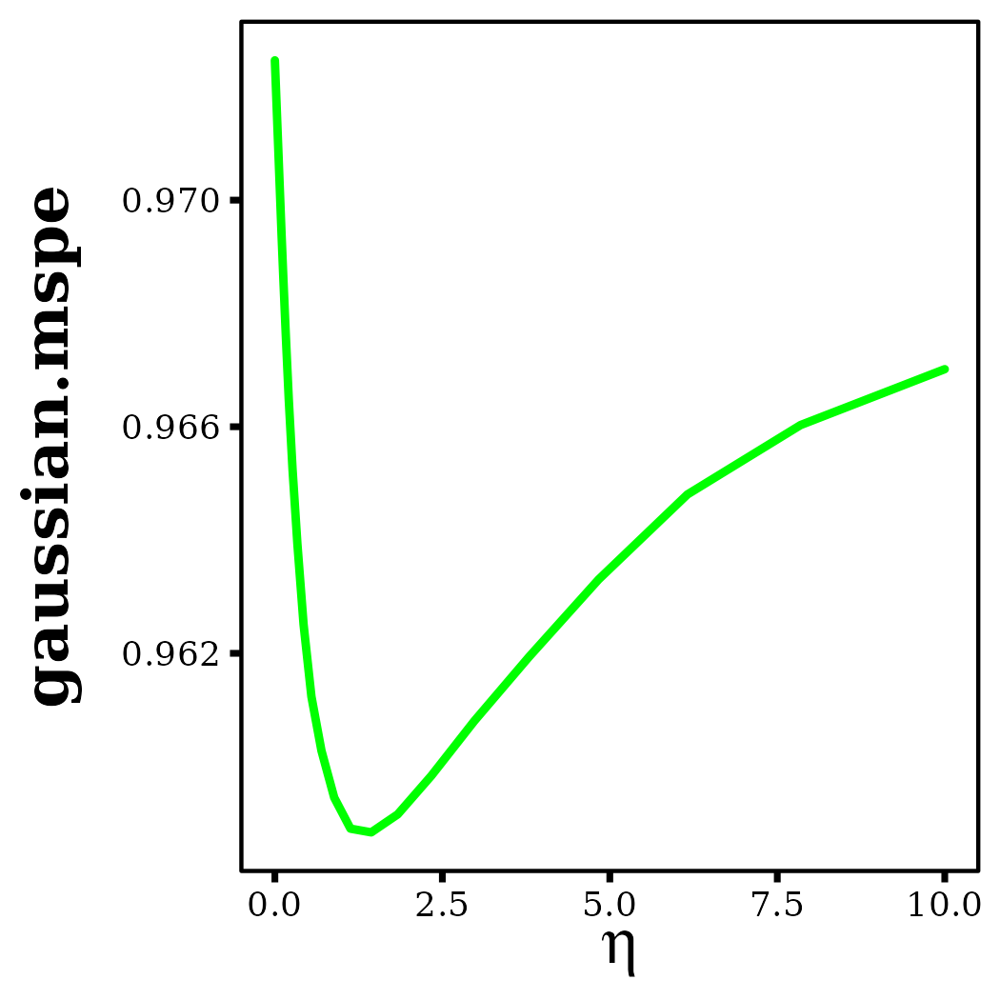
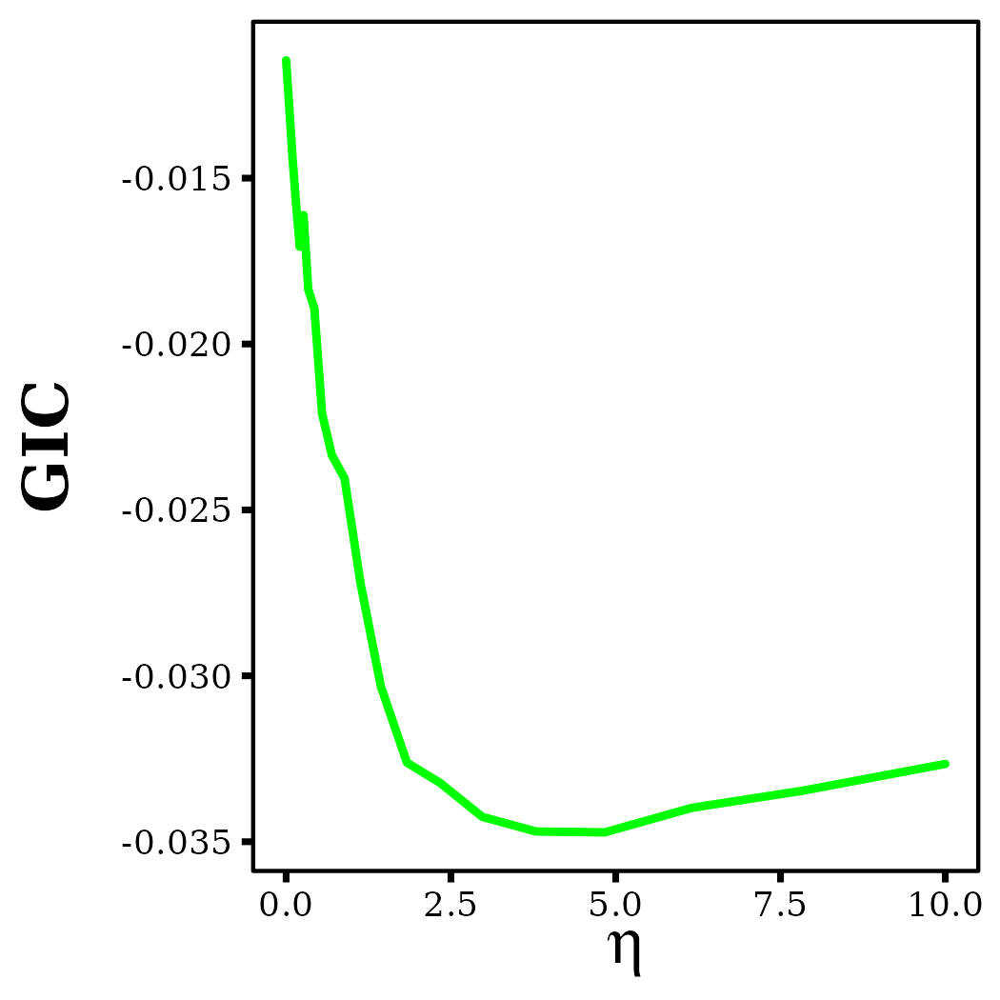
Hyperparameter tuning of \(\eta\) using Bayesian optimization
We implement Bayesian optimization–based tuning of the integration
weight \(\eta\) using the
rBayesianOptimization package. This approach adaptively and
iteratively proposes candidate values of \(\eta\) by learning a surrogate model of the
objective function, leading to a substantially higher sampling density
in the neighborhood of the optimal integration weight compared with a
fixed grid search.
Bayesian optimization in BRIERsl is accessed through the
function BRIERs.bopt. Users must specify the search range
of the integration weight \(\eta\)
through the bounds_list argument, as well as the total
number of Bayesian optimization iterations through n_iter.
Additional required arguments are described below.
First, the score (objective) function is defined through the
criteria argument. When an independent validation set is
available, users should specify an appropriate predictive-performance
metric, chosen according to the outcome distribution evaluation metrics as the optimization objective.
In this setting, the validation data must be supplied through the
arguments X.val and y.val. Alternatively,
Bayesian optimization can be performed using information-based criteria
as the objective function, without requiring a validation set. In this
case, the criteria argument should be set to one of the supported
information criteria listed in Table @ref(tab:BRIERs.selection), and the
corresponding quantities are computed internally from the target
data.
Second, the acquisition function is specified via the acq argument.
The available options, “ucb”, “poi”, and “EI”, correspond to the Upper
Confidence Bound (UCB), Probability of Improvement (POI), and Expected
Improvement (EI) acquisition functions, respectively, as implemented in
the rBayesianOptimization package. The default choice is
“ucb”.
Finally, the initial evaluation points for Bayesian optimization are
controlled by the arguments init_grid_dt and
init_points. If init_grid_dt is left empty,
the algorithm initializes by randomly sampling init_points
values of \(\eta\) from the range
specified in bounds_list. By default, a single initial
point, data.frame(eta = 1), is used for
init_grid_dt. This choice reflects the fact that \(\eta = 1\) corresponds to equal weighting
between the target and external information and was observed in
simulation studies to induce higher effective sampling density in the
neighborhood of the optimal integration weight \(\eta\).
Below are examples of using the prediction performance on validation set as the score function:
y_val = read.table("path/to/file")
X_val = read.table("path/to/file") %>% as.vector()
out = BRIERs.bopt(
X = pred,
y = pheno,
ind = ind,
family = "gaussian",
penalty = "LASSO",
criteria = "gaussian.mspe",
X.val = X_val,
y.val = y_val
)
## Best eta and lambda based on Cp are reportedBelow are examples of using the GIC criteria as the score function:
y_val = read.table("path/to/file")
X_val = read.table("path/to/file") %>% as.vector()
out = BRIERs.bopt(
X = pred,
y = pheno,
ind = ind,
family = "gaussian",
penalty = "LASSO",
criteria = "GIC",
TN = dat$TN,
h2 = dat$h2
)
## Best eta and lambda based on Cp are reportedWe also provide the function plot.eta.density to
visualize the empirical density of the \(\eta\) values explored during Bayesian
optimization. This plot illustrates how the adaptive sampling strategy
concentrates evaluations in regions with high objective values. The
vertical red dotted line indicates the selected (optimal) integration
weight \(\eta\).
plot.eta(out)Handling multiple external model
BRIER2 provides two adaptive weighting strategies for
integrating multiple external models: a PCA-based approach and an
ensemble-based approach, implemented in the functions
BRIERi.multi and BRIERs.multi for
individual-level and summary-level target data, respectively. This
strategies substantially reduce computational burden by collapsing the
multidimensional penalty space into a one-dimensional tuning parameter
combined with an estimated ensemble weight. This strategy avoids
computationally intensive joint optimization over multiple
external-model hyperparameters while retaining flexible information
borrowing across sources.
The choice of aggregation strategy is controlled by the
aggregate argument, where “pca” specifies the PCA-based
weighting method and “ensemble” specifies the ensemble-based weighting
method. We recommend using the ensemble based strategy as in
comprehensive simulation and real data analysis it achieves comparable
prediction performance with the gold standard approach, which jointly
tunes a separate integration weight for each external model.
Methodological details are provided in the Appendix.
Before integrating all external models to the target data
Users may have access to multiple external models; however, it is often undesirable to include all of them in the final integration. Some external models may be well aligned with the target data and improve predictive performance, whereas others may be highly heterogeneous and provide little or no benefit.
In such cases, users may first integrate each external model
individually with the target data and evaluate predictive performance on
a testing set. The function plot.eta can be used to
visualize model performance as a function of the integration weight
\(\eta\), thereby diagnosing the degree
of heterogeneity between the target data and each external model (see Section 10.1).
In the example below, three BRIER2 models are fitted by
integrating different external models with the same target dataset. The
model corresponding to the dashed light-green curve shows no improvement
in predictive MSPE across values of \(\eta\), indicating substantial
heterogeneity with the target data. Consequently, users may reasonably
exclude this external model when jointly integrating multiple sources
using BRIER.multi.
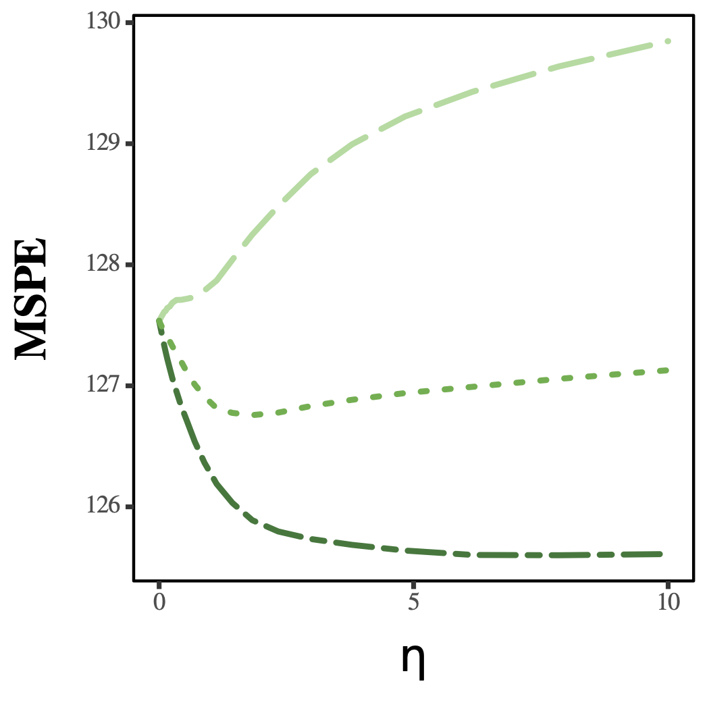
BRIERi.multi with individual-level target data
Data format and preprocessing
BRIERi.multi requires:
- individual-level predictor design matrix and phenotype data from the target cohort, and
- one or multiple pre-trained external models. External models must be provided from joint model coefficients (e.g., PRS, penalized regression). If only GWAS summary statistics or marginal predictor–trait inner products are available, users should instead refer to BRIER.S to train a joint model directly from summary-level data. Multiple external models can be provided as a column-stacked matrix.
We begin by loading the package:
Below we import the phenotype and predictor matrix from target data and external models. Users should subset the predictors to those that are shared between the target and external models. We note that it is strongly recommended to train the external model using this shared set of predictors to minimize heterogeneity between the target and external data. When the external model is obtained from a published study (e.g., published PRS weights), users may reconstruct the external model by assigning coefficient values of zero to predictors that are present in the target data but absent from the external model, or vice versa.
## target cohorts
X_target = read.table("path/to/file")
y_target = read.table("path/to/file") %>% as.vector()
names(y_target) == rownames(X_target)
length(y_target) == nrow(X_target) # sample name and number of observation should be matched
## External models
beta1 = read.table("path/to/file") %>% as.vector()
beta2 = read.table("path/to/file") %>% as.vector()
beta3 = read.table("path/to/file") %>% as.vector()
## reconstruct beta so it matches colnames(X_target) exactly, filling unoverlapped (missing) coefficients with 0
beta_ext1 = setNames(numeric(ncol(X_target)), colnames(X_target))
beta_ext1[intersect(names(beta1), colnames(X_target))] = Ebeta[intersect(names(beta1), colnames(X_target))]
beta_ext2 = setNames(numeric(ncol(X_target)), colnames(X_target))
beta_ext2[intersect(names(beta2), colnames(X_target))] = Ebeta[intersect(names(beta2), colnames(X_target))]
beta_ext3 = setNames(numeric(ncol(X_target)), colnames(X_target))
beta_ext3[intersect(names(beta3), colnames(X_target))] = Ebeta[intersect(names(beta3), colnames(X_target))]
beta_ext = cbind(beta_ext1, beta_ext2, beta_ext3)Data preprocessing with polygenic risk modeling
Users may also use the function PreprocessI to preprocess target and
external data when multiple external models are available in polygenic
risk score (PRS) modeling. User should supply target data information
through argument X.target, y.target,
covar.target, and multiple external data through
ss.ext, type.ext, N.ext,
LD.ext
dat = PreprocessI(
X.target, y.target, covar.target, standardize.target = T,
ss.ext, type.ext, N.ext, LD.ext
)Input format of target data
The input format of the target data for PreprocessI is
identical to that described in Section
7.2. Here, we provide sample scripts to illustrate the required
inputs.
X = BEDMatrix("path.bed")
X = as.matrix(X)
y = read.table(XXX)
covar = read.table(XXX)Input format of multiple external summary statistics
When multiple external summary statistics are available, users should
supply lists to the arguments ss.ext,
type.ext, and N.ext, with each list element
corresponding to one external data source. The detailed input
requirements for ss.ext under different
type.ext are described in Section 7.2.
We further note that if all external summary statistics are derived
from the same population, a single LD reference panel may be provided
through the LD.ext argument. Otherwise, when external
sources originate from different populations, LD.ext should
also be supplied as a list, with each element corresponding to the
appropriate LD reference panel for that external dataset.
N_ext1 = 100
type_ext1 = "GWAS"
ss_ext1 = read.table("Target.GWAS.txt", header = TRUE)
LD_ext1 = readRDS(XXX)
N_ext2 = 100
type_ext2 = "corr"
ss_ext2 = read.table("Target.Corr.txt", header = TRUE)
LD_ext2 = readRDS(XXX)
N_ext3 = NULL
type_ext3 = "coef"
ss_ext3 = read.table("Target.Corr.txt", header = TRUE)
LD_ext3 = NULL
N_ext = list(N_ext1, N_ext2, N_ext3)
type_ext = list(type_ext1, type_ext2, type_ext3)
ss_ext = list(ss_ext1, ss_ext2, ss_ext3)
LD_ext = list(LD_ext1, LD_ext2, LD_ext3)Run PreprocessI
With the target and external datasets prepared as described above, we
now run PreprocessI to perform the required data
preprocessing. The function output a list, containing X for
processed target design matrix, y for processed target
phenotype, beta.ext for a matrix of processed external
trained models.
dat = PreprocessI(
X.target = X_target, y.target = y_target, covar.target = covar_target, standardize.target = T,
ss.ext = ss_ext, type.ext = type_ext, N.ext = N_ext, LD.ext = LD_ext
)Fitting BRIERi.multi
Once preprocessing is complete, a BRIERi.multi model can
be fitted directly. Below we illustrate the Gaussian/LASSO case using
the ensemble based strategy:
Hyperparameter tuning
Users may use the function BRIERi.selection to perform
hyperparameter tuning for a fitted BRIERi.multi object,
using either an independent validation dataset or information-based
criteria. Additional details are provided in Section 7.4.
BRIERs.multi with summary-level target data
Data preprocessing with polygenic risk modeling
Users may also use the function PreprocessS to
preprocess target and external summary statistics when multiple external
models are available in polygenic risk score (PRS) modeling. User should
supply target data information through argument ss.target,
type.target, N.target, LD.target,
and multiple external data through ss.ext,
type.ext, N.ext, LD.ext
dat = PreprocessS(
ss.target, type.target, N.target, LD.target,
ss.ext, type.ext, N.ext, LD.ext
)Input format of target summary statistics
The input format of the target summary statistics for
PreprocessS is identical to that described in Section 8.1. Here, we provide sample scripts
to illustrate the required inputs.
N_target = 100
type_target = "GWAS"
ss_target = read.table("Target.GWAS.txt", header = TRUE)
head(ss_target)
LD_target = readRDS(XXX)Input format of multiple external summary statistics
When multiple external summary statistics are available, users should
supply lists to the arguments ss.ext,
type.ext, and N.ext, with each list element
corresponding to one external data source. The detailed input
requirements for ss.ext under different
type.ext are described in Section 8.1.
We further note that if all external summary statistics are derived
from the same population, a single LD reference panel may be provided
through the LD.ext argument. Otherwise, when external
sources originate from different populations, LD.ext should
also be supplied as a list, with each element corresponding to the
appropriate LD reference panel for that external dataset.
N_ext1 = 100
type_ext1 = "GWAS"
ss_ext1 = read.table("Target.GWAS.txt", header = TRUE)
LD_ext1 = readRDS(XXX)
N_ext2 = 100
type_ext2 = "corr"
ss_ext2 = read.table("Target.Corr.txt", header = TRUE)
LD_ext2 = readRDS(XXX)
N_ext3 = NULL
type_ext3 = "coef"
ss_ext3 = read.table("Target.Corr.txt", header = TRUE)
LD_ext3 = NULL
N_ext = list(N_ext1, N_ext2, N_ext3)
type_ext = list(type_ext1, type_ext2, type_ext3)
ss_ext = list(ss_ext1, ss_ext2, ss_ext3)
LD_ext = list(LD_ext1, LD_ext2, LD_ext3)Run PreprocessS
With the target and external datasets prepared as described above, we
now run PreprocessI to perform the required data
preprocessing. The function output a list, containing X for
processed target design matrix, y for processed target
phenotype, beta.ext for a matrix of processed external
trained models.
dat = PreprocessS(
ss.target = ss_target, type.target = type_target, N.target = N_target, LD.target = LD_target,
ss.ext = ss_ext, type.ext = type_ext, N.ext = N_ext, LD.ext = LD_ext
)Fitting BRIERs.multi
Once preprocessing is complete, a BRIERs.multi model can
be fitted directly. Below we illustrate the Gaussian/LASSO case using
the ensemble based strategy:
Hyperparameter tuning
Users may use the function BRIERs.selection to perform
hyperparameter tuning for a fitted BRIERs.multi object,
using either an independent validation dataset or information-based
criteria. Additional details are provided in Section 8.4.
Downstream Analysis
In this section, we introduce a suite of downstream analysis tools
designed to facilitate performance evaluation, model diagnostics, and
biological interpretation. These functions operate on a parameter-tuned
BRIER.selection object generated from any of the three
selection procedures (BRIERfull.selection,
BRIERi.selection or BRIERs.selection). It
outputs a list containing a ggplot2 object, and the original data for
plotting.
Evaluation of BRIER2 model
We introduce several functions for evaluating the predictive
performance of fitted models. For complex outcome from different
distribution family, we provide comprehensive evaluation metrics to
evaluate BRIER2 performance, for example, predictive
deviance, AUC (binary outcomes), and C-index (survival outcomes).
Additional details are provided in the Appendix.
plot.eta
Except guiding the selection of integration weight \(\eta\) in parameter tuning, the
plot.eta function visualizes predictive performance under
user-specified evaluation metrics as a function of the integration
weight \(\eta\), if a testing set is
provided. This plot is particularly useful for assessing heterogeneity
between the target (target) data and external sources.
Specifically, plot.eta display the predictive
performance evaluated on an independent testing set as a function of the
integration weight parameter \(\eta\),
shown as the solid green curve. The light blue dotted line represents
the predictive performance of the external model alone, and the black
triangle marks the best \(\eta\)
selected during hyper-parameter tuning.
In genetic applications such as polygenic risk score (PRS)
evaluation, outcome measures often require adjustment for environmental
or clinical confounders. In these settings, users should provide a
data.frame containing the testing-set phenotype, along with
the column names corresponding to the trait of interest and relevant
confounders. The standardize.y option controls whether the
phenotype is standardized after confounder adjustment. To further
mitigate randomness in performance evaluation, bootstrap resampling is
supported and can be used to obtain more stable estimates of predictive
accuracy.
The \(\eta\)-curve highlights the implications of integrating varying degrees of external information into the construction of the integration model on the target population. As a result, it effectively portrays the levels of heterogeneity between datasets and provides guidance on the optimal degree of prior information incorporation.
Integrating low heterogeneous external information
The example below illustrates the integration curves obtained when
BRIER2 incorporates external information with low
heterogeneity relative to the target data. Model performance is
evaluated using two metrics: Pearson’s \(R^2\) (left panel) and mean squared
prediction error (MSPE; right panel). As the integration weight \(\eta\) increases and more external
information is transferred to the target model, predictive performance
improves, as indicated by an increase in Pearson’s \(R^2\) and a decrease in MSPE. Performance
reaches an optimum at an intermediate value of \(\eta\) and may decline slightly thereafter.
This pattern indicates that integrating external information improves
predictive accuracy and suggests that the relative heterogeneity between
the target and external data is low.
p <- plot.eta(
out, X = X_testing, y = y_testing, eval = "gaussian.pearsonrsq", pheno.name = "trait", adjust.covar = c("age", "sex"),
standardize.y = T, bootstrap = T, bootstrap.size = 0.8*nrow(X_testing), bootstrap.n = 100
)
p
p <- plot.eta(
out, X = X_testing, y = y_testing, eval = "gaussian.mspe", pheno.name = "trait", adjust.covar = c("age", "sex"),
standardize.y = T, bootstrap = T, bootstrap.size = 0.8*nrow(X_testing), bootstrap.n = 100
)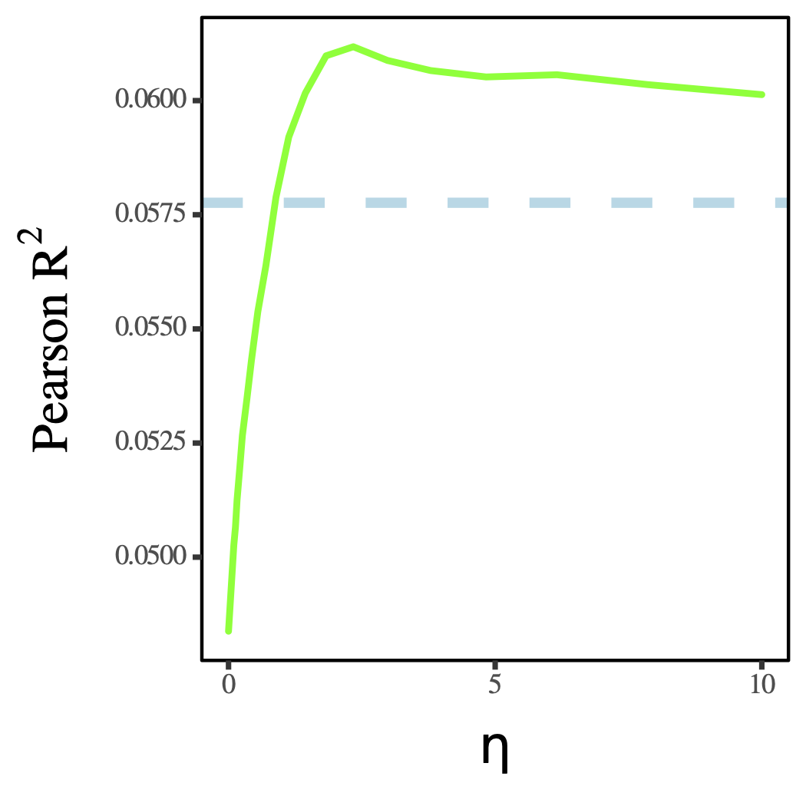
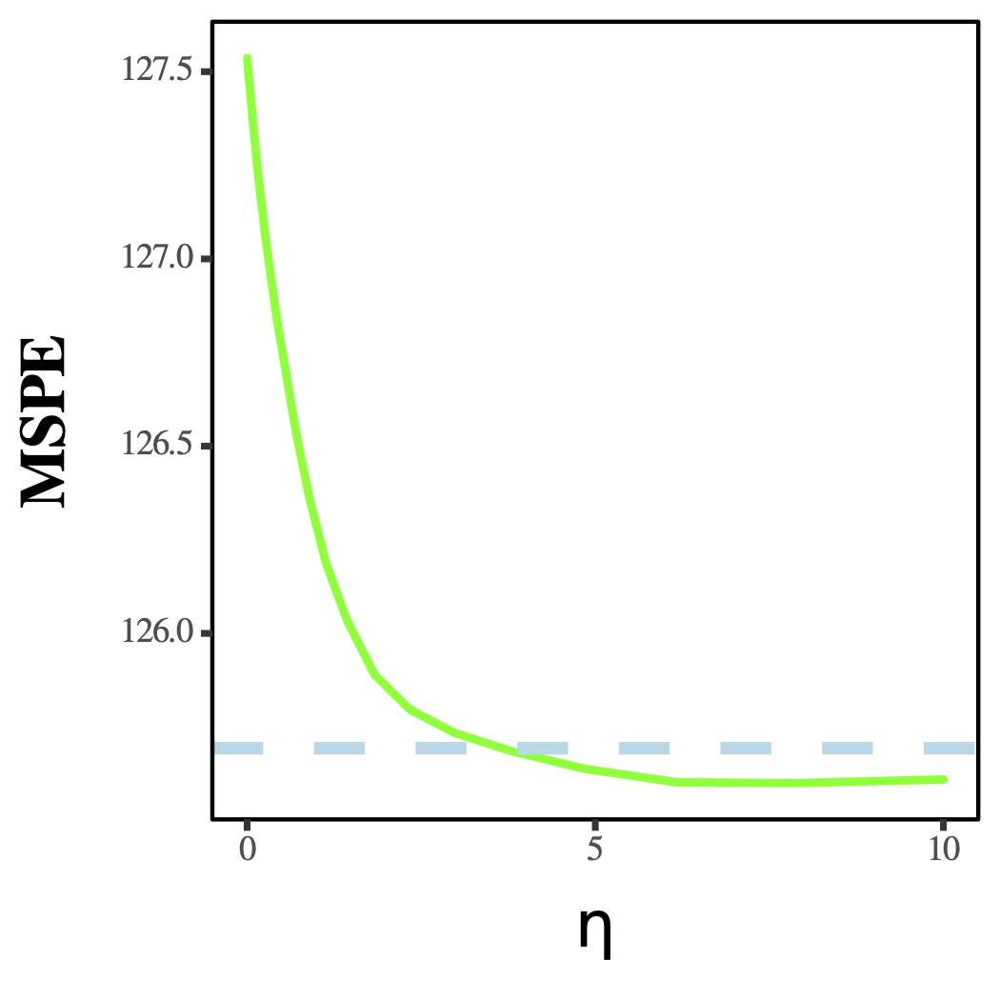
Integrating high heterogeneous external information
The example below illustrates the integration curves obtained when
BRIER2 incorporates external information with high
heterogeneity relative to the target data. Model performance is
evaluated using two metrics: Pearson’s \(R^2\) (left panel) and mean squared
prediction error (MSPE; right panel). As the integration weight \(\eta\) increases and more external
information is transferred to the target model, predictive performance
deteriorates, as indicated by an decrease in Pearson’s \(R^2\) and a increase in MSPE. This pattern
indicates that integrating external information does not improve
predictive accuracy and suggests that the relative heterogeneity between
the target and external data is high.
p <- plot.eta(
out, X = X_testing, y = y_testing, eval = "gaussian.pearsonrsq", pheno.name = "trait", adjust.covar = c("age", "sex"),
standardize.y = T, bootstrap = T, bootstrap.size = 0.8*nrow(X_testing), bootstrap.n = 100
)
p
p <- plot.eta(
out, X = X_testing, y = y_testing, eval = "gaussian.mspe", pheno.name = "trait", adjust.covar = c("age", "sex"),
standardize.y = T, bootstrap = T, bootstrap.size = 0.8*nrow(X_testing), bootstrap.n = 100
)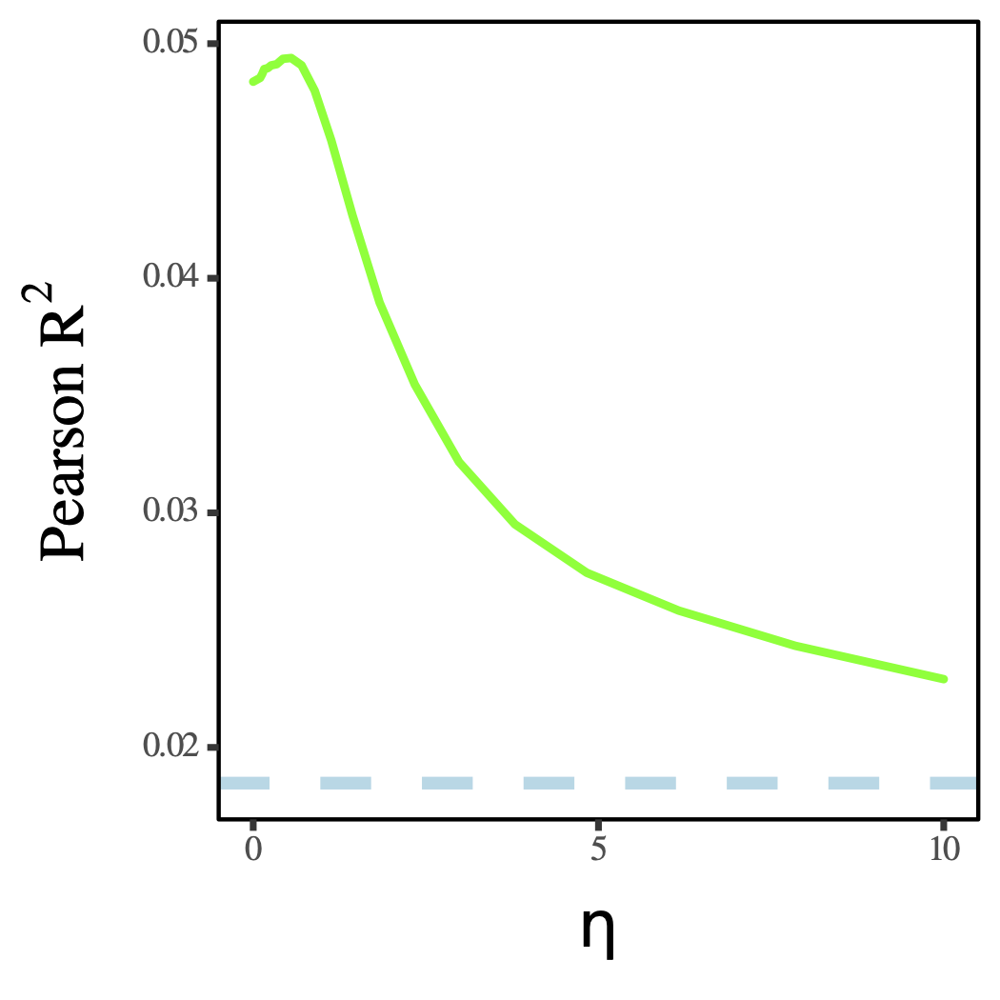
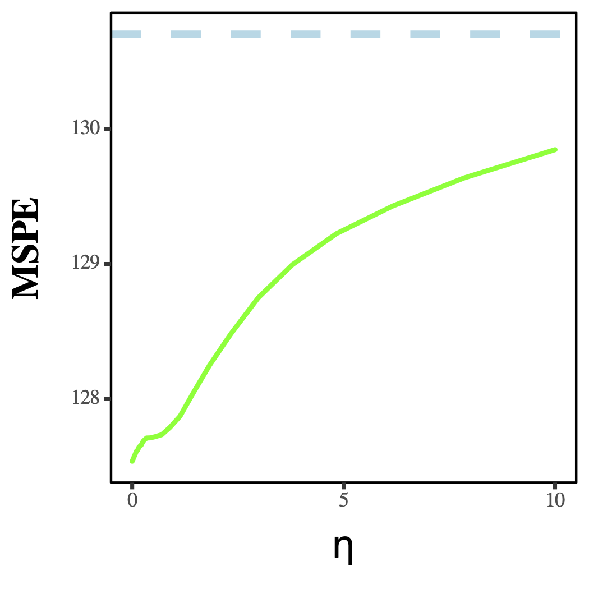
Multiple fitted BRIER2 objects
A list of fitted BRIER.selection objects can also be supplied to this function. This functionality is particularly useful when multiple external models are available, as it allows users to assess the degree of heterogeneity between each external model and the same target (target) dataset, and to determine which external sources are likely to be beneficial for integration.
In the example below, three BRIER models are fitted by integrating
different external models with the same target data. The model
corresponding to the dashed light-green curve shows no improvement in
predictive Pearson’s \(R^2\) (left) or
mspe (right) across values of \(\eta\),
indicating substantial heterogeneity with the target data. Consequently,
users may reasonably exclude this external model when jointly
integrating multiple sources using BRIER.multi.
p <- plot.eta(
out.list, X = X_testing, y = y_testing, eval = "gaussian.mspe", pheno.name = "trait", adjust.covar = c("age", "sex"),
standardize.y = T, bootstrap = T, bootstrap.size = 0.8*nrow(X_testing), bootstrap.n = 100
)
p
p <- plot.eta(
out.list, X = X_testing, y = y_testing, eval = "gaussian.pearsonrsq", pheno.name = "trait", adjust.covar = c("age", "sex"),
standardize.y = T, bootstrap = T, bootstrap.size = 0.8*nrow(X_testing), bootstrap.n = 100
)
p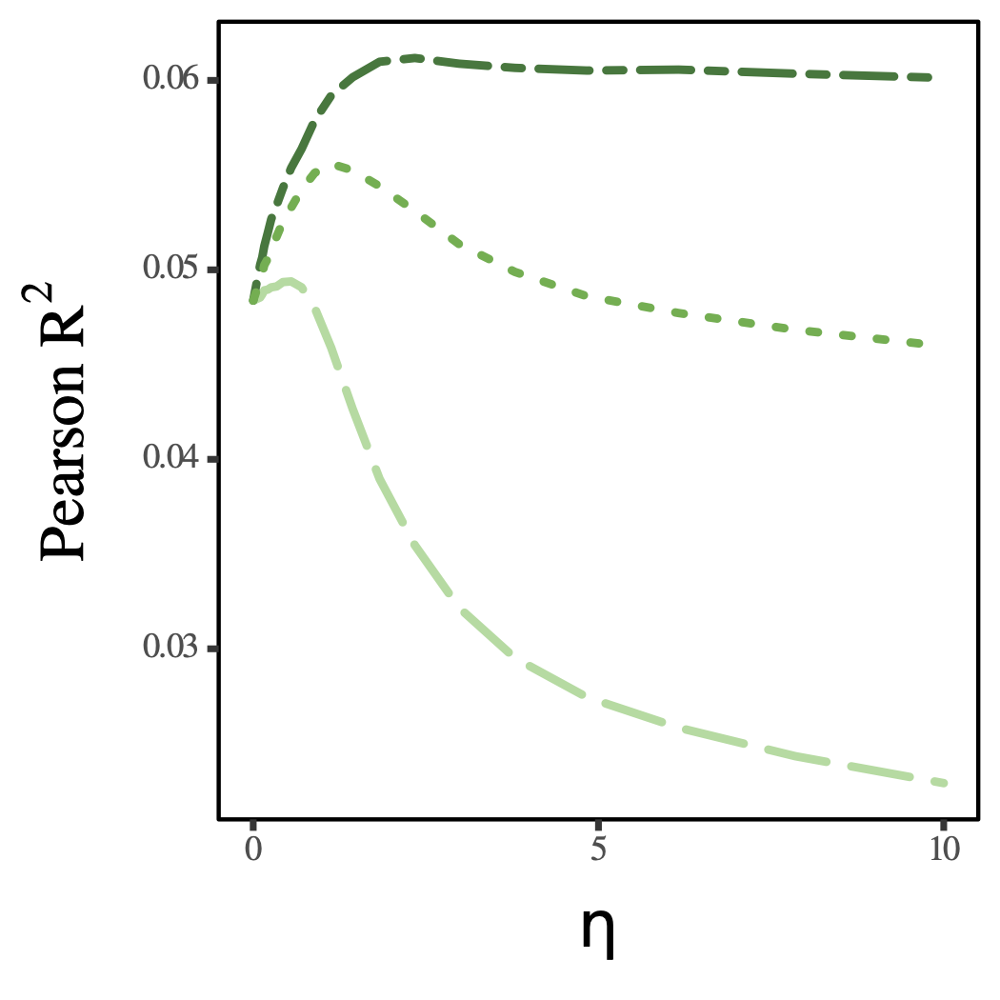
plot.box
The plot.box function provides a complementary
perspective for evaluating BRIER models. It visualizes the
distribution of predictive performance across bootstrap resamples using
boxplots, thereby capturing variability introduced by sampling
randomness. Below, we illustrate plot.box under settings
where the external information exhibits low and high heterogeneity
relative to the target (target) data.
Integrating low heterogeneous external information
In the example below, the external model achieves stronger predictive
performance than the target-only model (higher Pearson \(R^2\) and lower MSPE), suggesting
relatively low heterogeneity between the target and external data. By
appropriately integrating external information, the BRIER2
model further improves predictive accuracy, demonstrating the benefit of
information borrowing when external sources are well aligned with the
target population.
p <- plot.box(
out, X = X_testing, y = y_testing, eval = "gaussian.pearsonrsq", pheno.name = "trait", adjust.covar = c("age", "sex"),
standardize.y = T, bootstrap.size = 0.8*nrow(X_testing), bootstrap.n = 100
)
p
p <- plot.box(
out, X = X_testing, y = y_testing, eval = "gaussian.mspe", pheno.name = "trait", adjust.covar = c("age", "sex"),
standardize.y = T, bootstrap.size = 0.8*nrow(X_testing), bootstrap.n = 100
)
p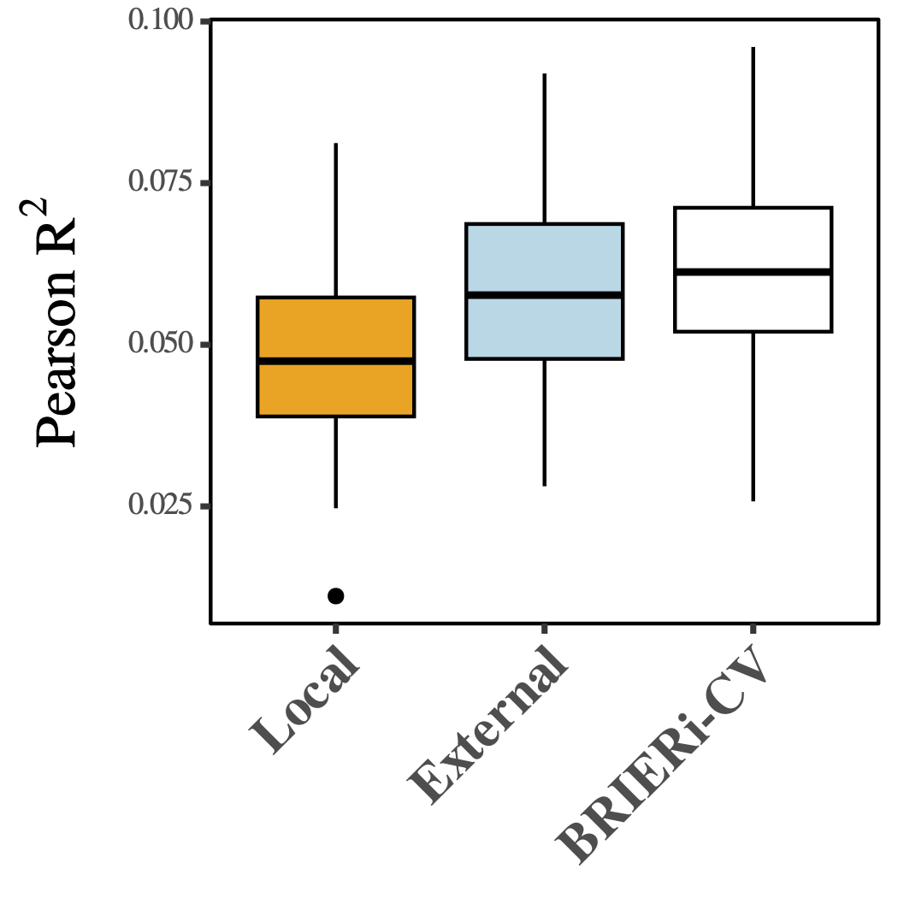
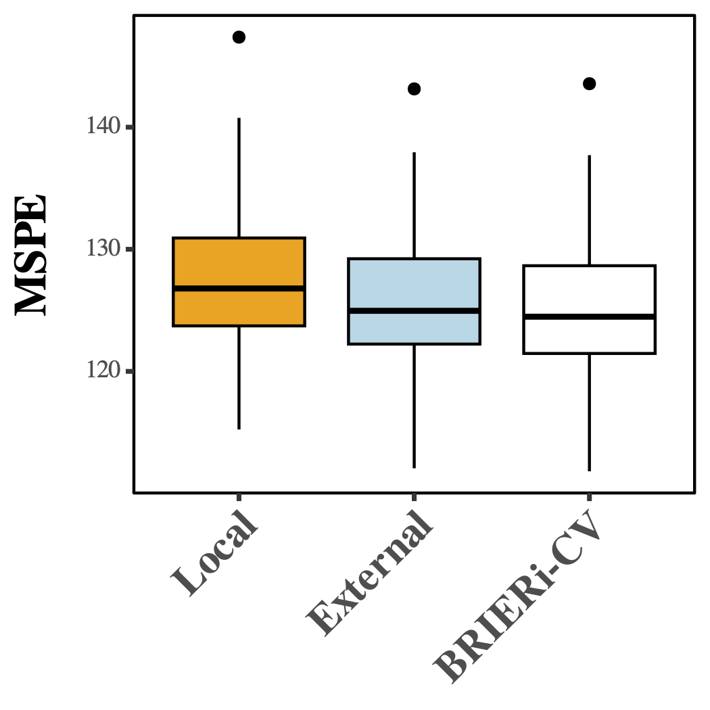
Integrating high heterogeneous external information
In contrast, the example below illustrates a setting where the external model performs poorly relative to the target-only model (lower Pearson \(R^2\) and higher MSPE), indicating substantial heterogeneity between the target and external data. As the integration weight increases, incorporating external information does not improve (and may even degrade) predictive performance. This pattern suggests that the external source is not well matched to the target population and may be excluded from joint integration.
p <- plot.box(
out, X = X_testing, y = y_testing, eval = "gaussian.pearsonrsq", pheno.name = "trait", adjust.covar = c("age", "sex"),
standardize.y = T, bootstrap.size = 0.8*nrow(X_testing), bootstrap.n = 100
)
p
p <- plot.box(
out, X = X_testing, y = y_testing, eval = "gaussian.mspe", pheno.name = "trait", adjust.covar = c("age", "sex"),
standardize.y = T, bootstrap.size = 0.8*nrow(X_testing), bootstrap.n = 100
)
p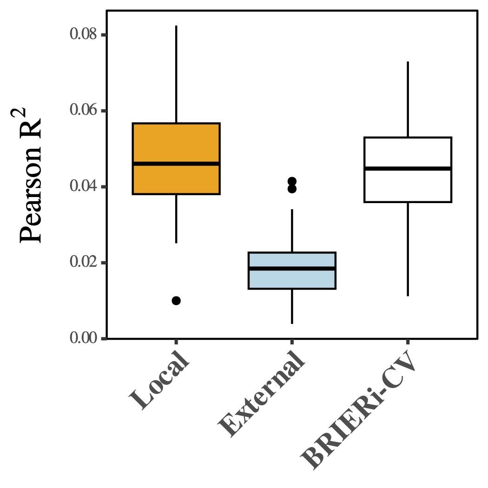
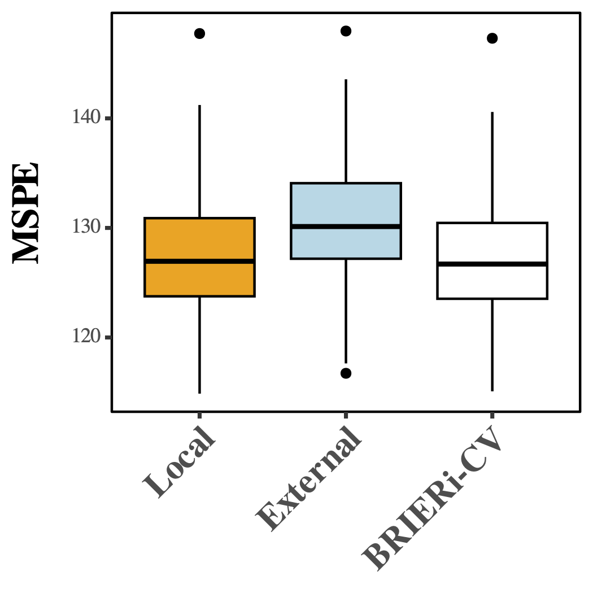
Variable importance
The plot.importance function provides a stability-based
assessment of variable importance by repeatedly re-validation the fitted
model on bootstrap resamples of the validation data. For each
replication, the procedure records which predictors enter the model, and
it summarizes their selection frequencies across all resamples. The
resulting plot displays the predictors ranked by how consistently they
are selected, offering an interpretable measure of feature importance
that complements effect-size estimates. High-frequency markers indicate
stable, reproducible signals that contribute to prediction performance,
whereas low-frequency markers may reflect noise or dataset-specific
fluctuations. This diagnostic is particularly valuable in
high-dimensional genomic settings, where model sparsity and sampling
variability can obscure truly informative predictors.
p <- plot.importance(out, X = X_validation, y = y_validation, n.top = 10, replications = 100, seed = 1)
p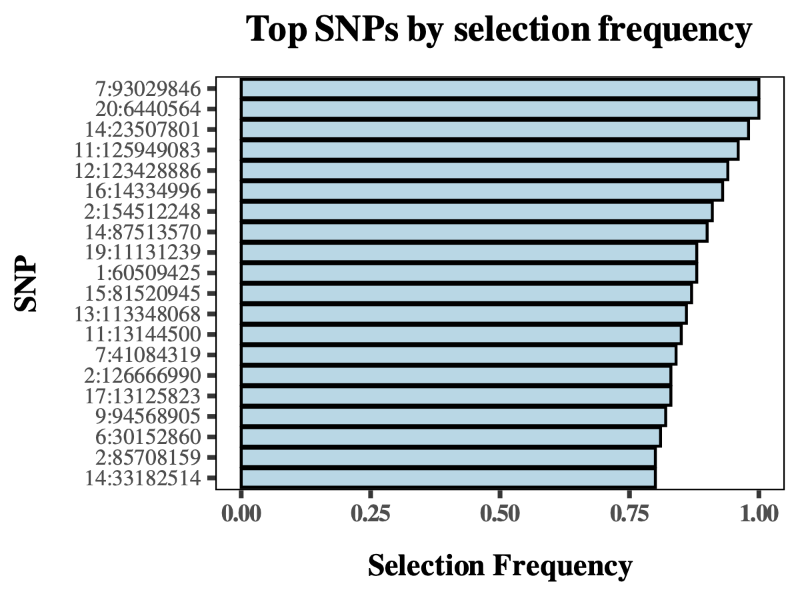
By specifying n.top = NA, the
plot.importance function will output the selection
frequency distribution histogram for all prediction.
p <- plot.importance(out, X = X_validation, y = y_validation, n.top = NA, replications = 100, seed = 1)
p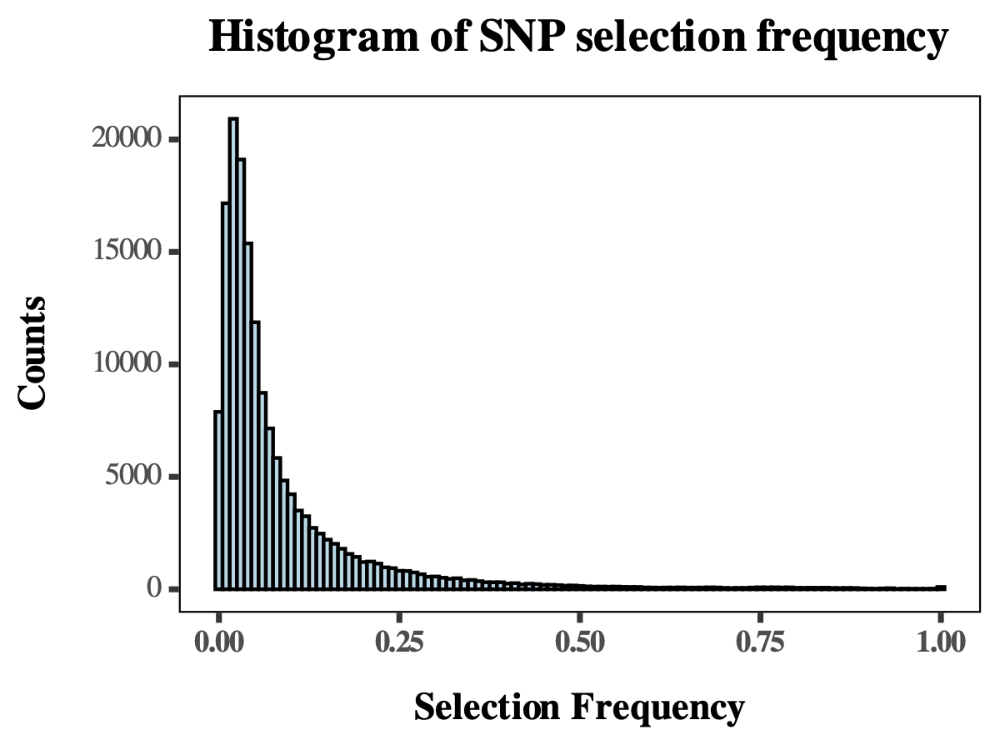
PRS stratification
The plot.strat presents the distribution of continuous
traits in test data stratified by a percentile cut-off (Pct) of the
target, external only model and BRIER2 integration. These
plots further visualize the discrimination power of each model. In the
plots, we compare the median distance between the upper and lower
percentile stratification of the observed outcome distribution, and show
the distance in the title of the plots. [HOW TO QUANTIFY THIS]
p <- plot.strat(out, X = X_testing, y = y_testing, lower = 0.4, upper = 0.4)
p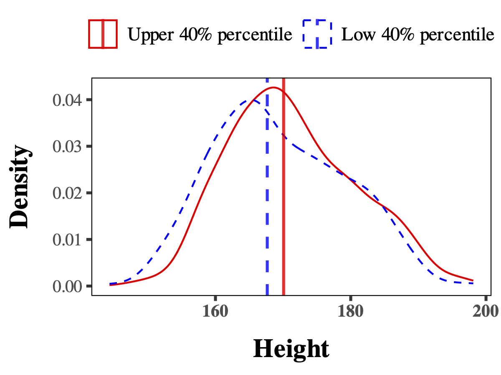